① 自适应巡航指示灯：
–自适应巡航指示灯点灰色亮表示ACC处于准备状态，前方有目标车；自适应巡航指示灯蓝色点亮表示ACC正在工作，前方有目标车。
–自适应巡航指示灯点灰色亮表示ACC处于准备状态，前方无目标车；自适应巡航指示灯蓝色点亮表示ACC正在工作，前方无目标车。
集成巡航辅助系统简称ICA。ICA可以在巡航时自动调节与前方车辆间的距离，并将车辆保持在车道中间（下文称为“转向辅助”），可应用巡航车速0~130km/h。
ICA通过安装在车辆前部的毫米波雷达和前挡风玻璃上的智能前向摄像头，探测前方路径上的车辆与本车之间的相对距离和速度，通过前摄像头探测设置在路面上的车道标志线。
ICA可提升驾驶舒适性并提供更轻松的驾驶体验，如在高速公路的平稳车流中长途驾驶时。
–雷达和摄像头传感器使用的注意事项。
–ICA与ACC有很强的关联性，您在学习使用ICA时，应同时阅读ACC相关章节。
–通过音响系统“设置→ADiGO智能驾驶→ADiGO驾驶辅助→巡航辅助模式”界面，选择“集成巡航”则ICA功能开启，选择“自适应巡航”则关闭ICA功能。
– 选择集成式巡航辅助后，按ACC的操作方式即可激活ICA。
–为方便操作，您也可以在ACC/ICA功能使用过程中，通过长按方向盘的按键，切换巡航辅助模式。
–系统具有巡航模式记忆功能，车辆启动后，巡航模式将与上次车辆熄火时的选择相同。

① 自适应巡航指示灯：
–自适应巡航指示灯点灰色亮表示ACC处于准备状态，前方有目标车；自适应巡航指示灯蓝色点亮表示ACC正在工作，前方有目标车。
–自适应巡航指示灯点灰色亮表示ACC处于准备状态，前方无目标车；自适应巡航指示灯蓝色点亮表示ACC正在工作，前方无目标车。
②表示储存的巡航车速。
③表示探测到的前方车辆。
④表示车道线。
–当系统未探测到有效车道线时不显示，探测到时显示灰色，ICA功能激活或车道偏离辅助转向作用时显示蓝色。车道偏离辅助报警时显示红色。
⑤表示ICA功能指示灯。
–若仪表中出现灰色的ICA指示灯，表明ICA功能已经开启，并处于待命状态。此时只要按照ACC激活流程操作，车辆便会激活ICA功能，点亮ICA蓝色指示灯。
ICA功能依赖于设置在路面上的车道标志线，ICA功能开启后，ICA指示灯可能仍为灰色，在系统探测到有效车道线后转向辅助即会自动激活，转向辅助指示灯变为蓝色。
开启ICA前请注意以下操作，否则功能无法开启，同时仪表弹出巡航统工作条件不满足的文字提示，更多操作注意事项见ACC章节。
– 关好车门。
– 系好安全带。
– 车辆处于前进挡。
– 松开刹车。
通过以下操作可暂时中断ICA功能对车辆的转向控制：
– 持续转动方向盘。
– 开启转向信号灯。
– 开启危险警告灯。
– 人为使车辆变道。
进行以上操作，仪表上的转向辅助指示灯由蓝色变为灰色表明转向辅助已暂时退出。停止上述操作后，ICA功能在条件满足时会自动恢复。
在ICA模式下，在探测到有效的双侧车道标志线，且ACC开启的前提下会自动激活。
ICA功能会让车辆保持在两侧车道标志线的中央行驶。
ICA功能在以下情况发生时会被抑制并发出横向辅助功能提示：
– 道路没有车道线或者车道线不清晰。
– 车道线曲率过高（急弯）。
– 双手长时间脱离方向盘，系统提示接管。
– 车道过宽或者过窄。
– 车速高于130km/h。
功能被抑制后，只要重新满足激活条件，ICA功能会重新自动激活。
转向辅助作用时，驾驶员仍可转动方向盘操控车辆。在驾驶员感觉系统所施加的力矩不当时，可随时控制车辆按驾驶员意图行驶。

当ICA监测到驾驶员较长时间双手脱离方向盘时，系统将发出接管提示。ICA指示灯上方会有双手闪烁，同时弹出文字提示。若驾驶员仍然没有接管，提示将升级，组合仪表显示上图并伴随报警音。
驾驶员接收到接管提示时，应立即手握方向盘。请勿惊慌，避免不必要地猛打方向。ICA系统监测到施加在方向盘上的手力矩时，即能识别到驾驶员手握方向盘，接管提示取消。ICA功能自动重新激活。
若在方向盘接管提示发出后，一段时间内驾驶员没有接管方向盘，ICA功能的转向辅助将中断。
ICA可能将驾驶员手轻放在方向盘上的情况误判为双手脱离方向盘。此情况下系统发出方向盘接管提示，驾驶员只需稍稍握紧或轻微晃动方向盘，系统即能探测到方向盘上的力矩，接管提示即会取消

ICA仅能使用有限的行车制动系统的制动能力，当系统需要驾驶员介入制动时，组合仪表显示报警信息并伴随报警音。
驾驶员接收到接管提示时，应立即踩制动踏板进行适当制动。
踩下制动踏板后，ICA功能将取消，若紧急情况消除，需要重新开启ICA时，短按方向盘按键或向上拨动多功能“OK”按键即可重新激活或恢复ICA功能。
恢复ICA功能，调整巡航车速，调整跟车时距，跟停前车后起步的操作方式同ACC。详情请查阅ACC章节。
ICA功能能够使用的转向系统及制动系统的能力均是有限的，所以ICA功能并不能在所有路况保持适当的车间距离，也不能在所有路况将车辆保持在车道内。
ICA系统可能会错误地探测车道标志线或探测不到车道标志线，并可能会错误地探测目标车或探测不到前方的目标车。
ICA系统功能即使被开启并显示正在工作，但在以下情况，系统可能会受影响、误作用或不起作用：
– 下雨、下雪、雾霾或沙尘暴等天气导致视线不佳。
– 前挡风玻璃脏污、破损、起雾或摄像头区域有遮挡物等。
– 阳光直射、迎面来车的车灯照射、路面积水反光等导致视线不佳。
– 光照情况剧烈变化，如进/出隧道。
– 夜间照明条件不佳。
– 车道标线不标准。
– 特殊的车道线颜色，如施工区域。
– 车道标线不明显，如过细、磨损、模糊或被污垢/刹车痕/积雪/积水等覆盖。
– 没有车道标线，或车道标线颜色与路面、路沿的颜色相近。
– 隔离带或其它物体在车道标线上投下了阴影。
– 与前车距离过近或前车行驶挡住了部分或全部车道标线。
– 施工设施等遮挡车道标线。
– 道路上有类似车道标线的标记或物体，如刹车痕、其它印制在路面的标志、路沿、车道接缝等。
– 车道数增多或减少。
– 车道标线穿行复杂。
– 车辆行驶的左右两侧车道标线超过两条。
– 车道过宽或过窄。
– 短时变换标线，如匝道进出口。
– 车道线曲率过高或变化剧烈（如S弯）。
– 行驶在陡坡、倾斜或弯曲道路上。
– 路面坑洼不平，结冰或积水等。
– 车辆严重摇晃。
ICA的车速辅助同ACC，更多的局限性工况请查阅ACC章节。
在以下情况，系统的横向辅助控制性能可能会受影响：
– 车辆超载。
– 轮胎气压异常。
– 路面不平。
– 强烈的侧风。
– 驾驶员对车辆操控相关零部件进行改装。
– 将车辆操控相关零部件换装为非原厂匹配的零部件。
– 车辆操控相关零部件装配不当。
–驾驶员需要判断交通环境等是否适合使用集成式巡航辅助。在城市交通、交叉路口、积水积雪路面、恶劣天气、山路、起伏路、高速公路进出口等情况下，请勿使用集成式巡航辅助。在车辆连接挂车情况下，请勿使用集成式巡航辅助。
–集成式巡航辅助系统使用不当或疏忽大意可能引发事故，驾驶员对驾驶始终负有全部责任，即使正在使用集成式巡航辅助系统。
–遵守交通安全法规，安全、文明驾驶始终是驾驶员的责任，即使正在使用集成式巡航辅助系统。
–集成式巡航辅助仅是驾驶辅助功能，无法应对所有道路、交通与天气状况，驾驶员对驾驶始终负有全部责任，应始终注意路况并主动控制车辆。
–驾驶员在使用集成式巡航辅助前，请务必通读使用手册中有关此功能的所有章节，了解此功能的系统局限性。
–集成式巡航辅助系统不是碰撞避免系统。当系统未做出适当的控制时，驾驶员必须介入。
–集成式巡航辅助系统无法覆盖所有驾驶工况，无法代替驾驶员。驾驶员务必始终手握方向盘，主动控制车辆。在集成式巡航辅助系统未提供适当的辅助或辅助不当时，驾驶员应及时进行干预。
集成式巡航辅助系统具有局限性，如:
–恶劣天气、车道线破损等诸多原因可能漏识别或误识别车道标志线，从而在需要时不产生转向辅助或误产生不必要的转向辅助。
–集成式巡航辅助系统仅能使用有限的车辆转向系统能力，所以并不能覆盖所有驾驶工况。
–集成式巡航辅助系统并不对所有交通状况起作用，在急弯前车道标志线曲率过高、遇到无车道标志线路段等路况下，横向辅助可能突然退出。
— 页面到底了 —